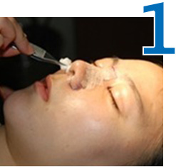
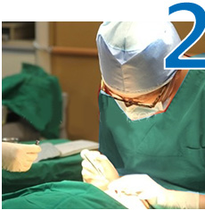
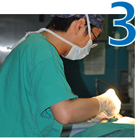

我们生活中常见的酒糟鼻
酒糟鼻自测


深在型酒糟鼻划痕疗法
酒糟鼻划痕疗法：深在型酒糟鼻患者单靠医用物难以达到治疗的目的，必须通过划痕手术的方法恢复鼻部的形态。酒糟鼻划痕手术可破坏扩张的毛细血管及增生的皮脂腺和结缔组织，使毛囊上皮细胞再生，创面愈合，形成正常或接近正常的表皮，从而达到治疗的目的。
操作要点：
鼻赘手术治疗鼻赘型酒糟鼻
鼻赘手术：切除大部分坛生的结缔组织，直到真皮浅层，保留部分毛囊，通过残留的毛囊鳞状上皮向两侧再生，达到修复创面而不留下疤痕的目的。
- 
鼻子及其周围的皮肤常规消毒
- 
局部浸润麻醉，（加入1%的1:1000肾上腺素）
- 
用21号刀片切除大部分肥大坛生的鼻赘组织。

治疗酒糟鼻 我们更专业
-
杨希?i特聘专家
- 突出贡献：
- ★鼻赘的外科手术治疗，1984年卫生部技术进步乙等奖
- ★人体蠕形螨感染的研究，1985年上海市教卫科技进步二等奖
- ★面颊部皮损的手术治疗中的美学原则初探，1991年全国皮肤美容学术研讨 会优秀论文二等奖
- 坐诊时间：每个月的第一与第三个周日
-
陆辉群 皮肤美容技术院长
上海江城皮肤病医院皮肤科专家组成员，曾在同济大学附属杨浦医院（三级）工作多年。先后进修于华山医院和瑞金医院，师从方丽教授和罗邦国教授，幸得精湛医术传承。在理论修养与临床诊治方面，均有丰富积淀。多次主持、参与皮肤病科研课题攻关，为我院临床工作做出了积极贡献。荣获"优秀医务工作者"、"文明服务标兵"等荣誉称号。
- ★优秀医务工作者
- ★文明服务标兵
我院案例
邓先生以"妙手回春"的锦旗 表达对吴主任的感谢
姓名：邓正华 年龄：38岁 职业：建筑工程师
2012年7月4日下午，上海金山区的酒糟鼻患者邓先生专程来到上海江城皮肤病医院，送锦旗感谢皮肤科专家吴玉琴主任的精心治疗，他五六年的顽疾酒糟鼻终于喜获治愈。锦旗上四个大字"妙手回春"代表着邓先生对这两位医生的由衷感激之情。
我也有这个症状酒糟鼻反反复复 在江城一朝祛除
姓名：陈晓丽 年龄：23岁 职业：办公室白领
情况不紧没得到改善还越发严重，吴主任给她用了一个疗程后，效果明显好转，3个疗程以后鼻子基本恢复正常，后期还需加一些内服药物的调理，使康复效果更加显著，笔者在采访的时候吴小姐很开心 很激动！2013年8月20日下午，浦东新区的陈小姐通过网络预约找到了江城医院，接诊的是吴主任陈小姐来的时候已经发病一年多了，一直在喝中药………
我也有这个症状让红鼻头成为历史 在江城的治疗经历
姓名：傅先生 年龄：60岁 职业：退休职员
傅先生讲述到：自从得了这个酒糟鼻后，自己在饮食上已经很是注意了，平时酒也很少喝，刺激性的东西更是根本不吃，但是鼻子的情况不但没有稳定，反而有加重的趋势，有时瘙痒起来，又不能用手抓，真是非常痛苦。来到上海江城医院杨主任采用了酒糟鼻划痕疗法，几天过后傅先生的酒糟鼻几乎完全治愈，看到即将消失的酒糟鼻，快人快语的傅先生兴奋地说："以后再也不会被喊红鼻子大叔了！"
我也有这个症状酒糟鼻手术疗法历经60年（无数成功病例）
酒糟鼻手术病例（酒糟鼻手术前后病理完全展示）
上海中医学院附属曙光医院皮肤科专家杨希?i教授给我们详细讲述了酒糟鼻手术的过程，给患者治疗前后各做了一次病理分析，第一次开刀前病理是这样，鼻子的真皮部位有大量肥厚，增生的皮质细胞，鼻子显得大，能清楚看到组织里面有蠕形螨在里面寄生，手术一年以后，和患者沟通好，这个治疗非常理想，服务感动了病人，他觉得很开心，所以术后同意让医生在鼻唇沟处取了一点点皮，术后病理显示皮脂腺增生明显减少，表皮结构完全形成，和正常一样。
我要咨询酒糟鼻划痕疗法
针对经久不愈的红斑，丘疹，毛扩，表皮粗糙，肥厚者均可手术，其操作要点在于
1、 常规皮肤消毒后，在鼻子上铺好洞巾，鼻子里塞适量棉花。
2、术前准备：浸润麻醉，医生根据患者鼻部的大小、形态选用3峰刀或5峰刀。
3、以适当的力度和速度，在患处纵横交错反复切割，使皮肤表面呈毛状。
4、最后用纱布压迫（冷敷）止血，并敷以凡士林纱布，包扎即可。
5、术后7～10天凡士林纱布自行脱落，创面结痂痊愈。
我要咨询酒糟鼻鼻赘手术
增对毛细血管扩展，鼻部肥大增生的患者采用切除大部分坛生的结缔组织，直到真皮浅层，保留部分毛囊，通过残留的毛囊鳞状上皮向两侧再生，达到修复创面而不留下疤痕的目的。其手术操作要点：
1、 鼻子及其周围的皮肤常规消毒
2、局部浸润麻醉，（加入1%的1:1000肾上腺素）
3、用21号刀片切除大部分肥大坛生的鼻赘组织
我要咨询酒糟鼻概述
酒糟鼻的定义：颜面中部的慢性充血性皮病，基本损害在于面鼻部 弥漫潮红，伴丘疹，脓疱，毛细血管扩张，少数患者鼻部皮肤粗糙、增厚、肥大成鼻赘。
酒糟鼻的病因：酒糟鼻的原因不明，多种因素综合结果，遗传，内分泌，胃肠道功能，植物神经紊乱，近年来有人提出蠕形螨感染诱发。
酒糟鼻防治：避免各种诱发因素，防止病情发展，早期酒糟鼻采用外用药，中药；中期酒糟鼻采用电灼，划痕术；后期采用划痕和手术切削。
我要咨询酒糟鼻治疗误区
01 红鼻子初期 不重视
鼻部刚出现潮红，表面油腻发亮，并不是很严重，未能引起足够的重视，在没有医生的指导下，盲目医治，虽一开始有效，之后越来越严重，耽误了最好的时机。
02 注重表象 不顾根本
很多医治产品只注重表象，用普通的有激素的外用霜抹于患处，初期时有一定效果，但是不注意从病例根处出发，治标不治本，酒糟鼻依然再次复发。
03 只顾“效果”不顾后果
大部分酒糟鼻患者，希望在短时间内鼻子变得光滑如初，选择了“含激素”的产品，看起来好像有效果。副作用：复发率极高，药物成瘾，依赖性很强，造成皮肤萎缩，角质变薄受损，或毛细血管扩张等新的损害。
04 认为酒糟鼻不可治
许多酒糟鼻患者在经过多次治疗，钱没少花，方法也没少用，就是没治好，而且越来越严重，从心理上失去了信心，从行动上放弃了医治。其实酒糟鼻是可以康复的，只要牢记这八个字“正确医治，积极配合”，酒糟鼻一定会得以康复。